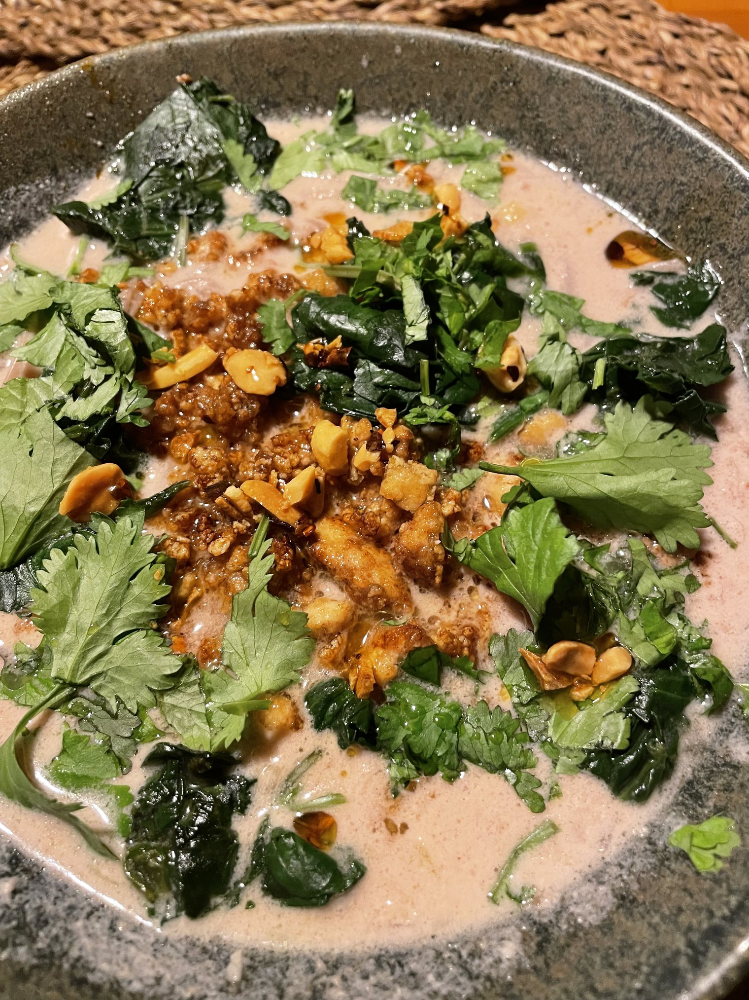

Ramen con leche de coco y tofu
Ingredients
2×
- 200 g de tofu
- aceite
- salsa de soja
- 500 ml de caldo de verduras
- 200 ml de leche de coco
- 2 puñados de espinacas
- 2 raciones de fideos de ramen
- cilantro fresco
- cacahuetes tostados

Preparación
Paso 1
Desmenuzar 200 g de tofu y dorarlo en una sartén con un poco de aceite y salsa de soja hasta que quede crujiente.
Paso 2
Calentar 500 ml de caldo de verduras con 200 ml de leche de coco. Añadir 2 puñados de espinacas y cocer 2min.
Paso 3
Cocer 2 raciones de fideos de ramen aparte, escurrir y repartir en los boles. Verter el caldo por encima.
Paso 4
Servir con el tofu, cilantro fresco y cacahuetes tostados.